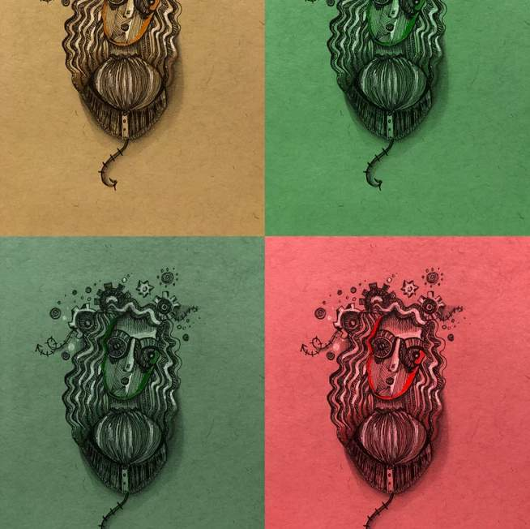
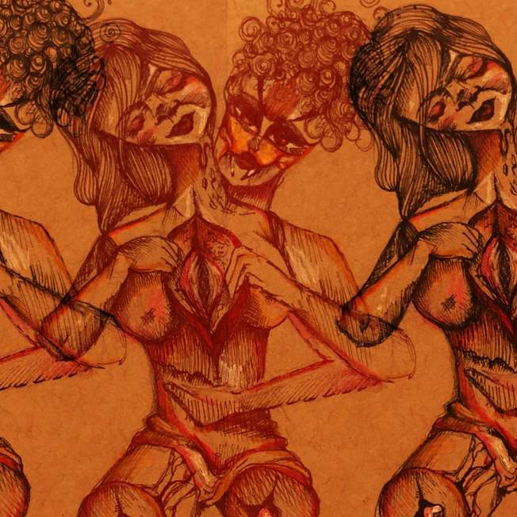
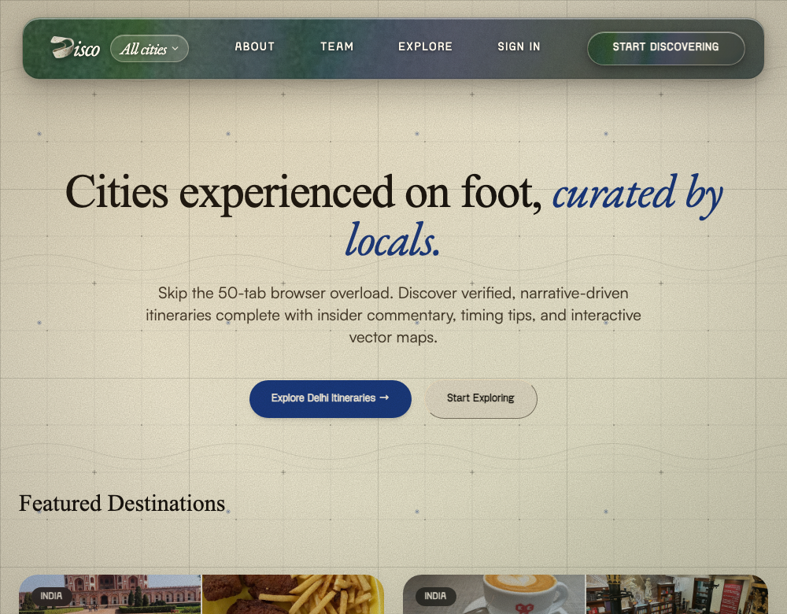
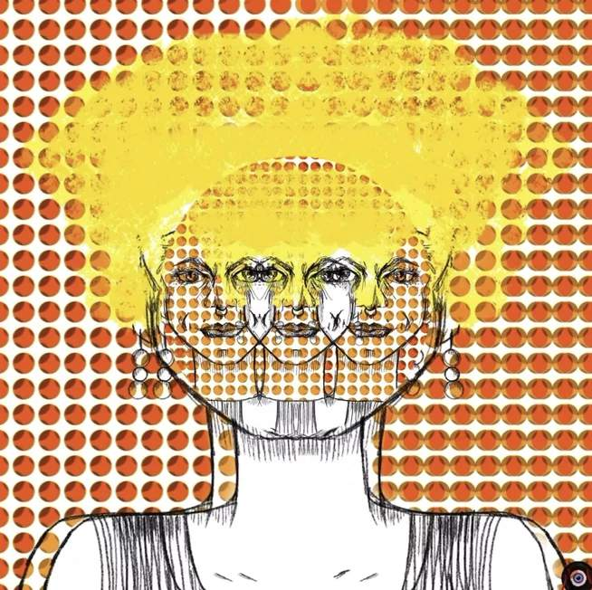
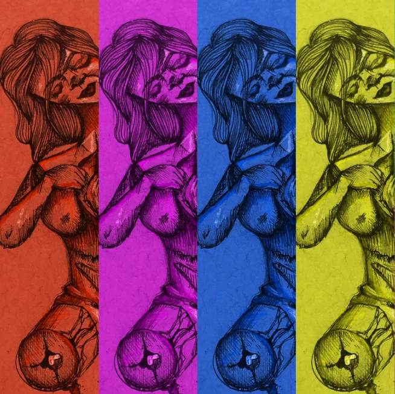
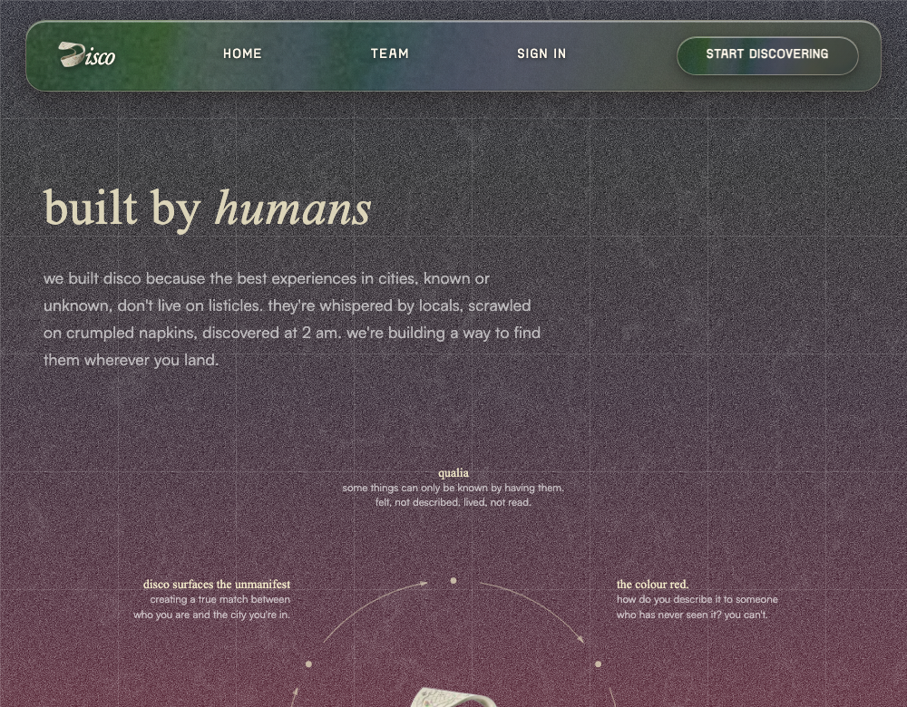
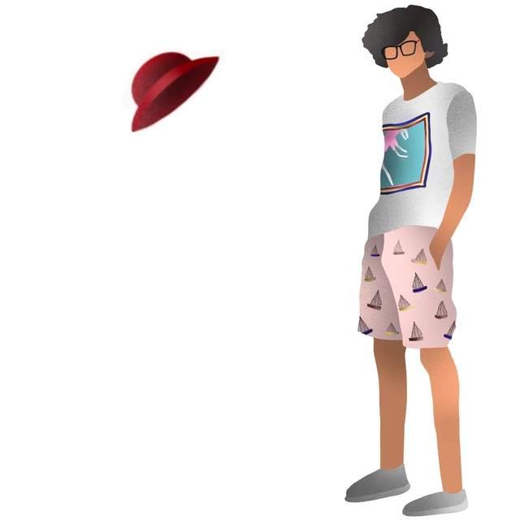
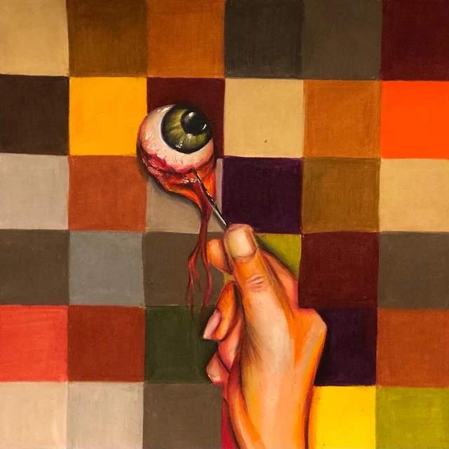
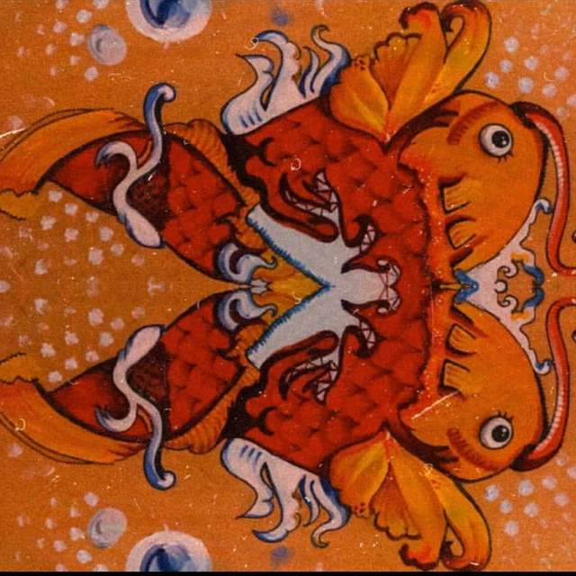

Litmus
A taste layer for AI. Written by one person instead of averaged from everyone.















AI made it easy to make anything.
Knowing what is worth keeping is the part it cannot do.
Litmus is a second brain for taste. Mine, written down, so a model can use it. You describe what you want and leave with a prompt and a skill that produce work in my taste rather than nobody's.
1. The problem
A model can build almost anything you describe. What it cannot do is choose. Show it six versions and it will make all six equally well and hand the decision back to you. If you do not decide, it settles on the average of everything it has ever seen.
That average is what people mean by slop. It is not bad work. It is work with nobody behind it.
I built a lot of interfaces with Claude last semester. The results were fine. Getting there took the same forty minutes every time: the same corrections, the same preferences typed out again, the same things ruled out. By the fifth project I was pasting the same instructions into an empty chat over and over.
2. The idea
Taste is not a style. It is a limit. What makes someone's work recognisable is not what they reach for. It is the very long list of things they will not do.
That list takes years to build and nobody ever writes it down, which is why it never makes it into a prompt.
Litmus writes it down. You say what you are making. Everything else is already decided.
3. Why one line is enough
You already give ChatGPT one line. That is not why the answer comes back generic. It comes back generic because the model has nothing of its own to fill the other ninety percent with.
One line and no opinions gives you slop. One line and strong opinions gives you a style.
The limit is the point. Inside a short list of allowed choices there is still plenty of range, and nothing in it is bad, because nothing bad was allowed in.
4. How I am building it
I am not writing my taste down from memory. I am making things and recording what I decide while I make them.
Five or six pieces to start: a couple of websites, an image, a poster. Each one is built in the open, with every choice logged, including the ones I threw out. Those decisions are the material. The rejected ones teach it more than the kept ones.


Twelve of the fifty-three pieces in my art portfolio. Everything here was drawn by hand before any of this started, which makes it the cleanest record of what I do when nothing is instructing me.
- Design 5 or 6 things myself. Two websites, an image, a poster, an email. Real pieces, finished properly, not exercises.
- Log every decision, kept and thrown out. Not just the final file. The four versions of the headline that died, the colour I tried for ten minutes and hated, the layout I abandoned. A finished piece only shows the winners. The losers are where the limit actually lives.
- Write the never list and the always list. Said outright, not inferred. Never a purple gradient. Never a centred headline. Always left aligned. Always one loud thing at most. The never list does more work than the always list, because a model will happily do anything you have not forbidden.
- Feed it back and mark what it got wrong. It reads the decisions and the two lists and tells me what it thinks my taste is. I go through and correct it. The corrections are the most valuable thing in the whole process.
- Write the file. One page. Never list first, then the rules, then exact sizes and colours, then a short test it can run on its own work.
- Test it on something new. A brief it has never seen, built twice, with the file and without. If I cannot tell which is which, it has not learned anything yet and I go back to step three.
Forty saved references sit underneath all this as background, but they are the weaker source. What I made, and what I killed while making it, says more than what I admire.
5. My taste so far
This is what came out of running the process on the left, once. It is my taste after somebody wrote it down.
Nine rules, taken from five things I picked and four directions I turned down. Each one is a guess, and each one is followed by the thing that made me think it. These nine are what get written into the file in the next tab.
| Rule | What made me think it | How sure |
|---|---|---|
| Plain background. No tint for the sake of mood. | I called the soft colour washes AI design and cut them. | Sure |
| Ordinary type doing ordinary work. One loud thing per page at most. | Three loud typefaces on one page was too much. One was fine. | Sure |
| Text small and packed tight, with space around it instead of inside it. | The drinks poster and the shop window both set text tiny. | Fairly |
| Count things out loud. Numbers are part of the layout. | Three of the five things I picked number their contents. | Fairly |
| Nothing in a box. No cards, no borders, no shadows. | True of every single thing I picked. | Sure |
| Texture has to be real. No filters laid over the top. | Real paper creases in the references. Grain filter rejected on sight. | Sure |
| No dressing up. Not grunge, not antique, not laboratory. | Grunge was too much. Old-fashioned script was too grand. | Sure |
| Everything to the left. Centred pages look like templates. | True across all five, though I never said it out loud. | Untested |
| If something is only there to look nice, take it out. | The reason underneath every rejection above. | Fairly |
01. Plain ground. The paper is the paper.
02. One loud thing. Everything else quiet.
05. Nothing in a box, no shadow.
06. Texture from the material, not a filter.
09. Nothing there only to look nice.
The same rules, found in drawings made years before I thought about any of this.
What the first version got wrong
The first attempt said my backgrounds are always off-white and my type should be distinctive. Both were wrong. I said so, they were rewritten, and this is the second version.
That is the method working, not the method failing. The first read of anyone's taste is a description of good design in general. It only becomes theirs once they say what it got wrong.
6. What you get
Two things, and you choose which you want.
A prompt. Copy it, paste it, use it once. Good for a single piece.
A skill. One page of instructions you drop into a project folder. Every chat about that project then starts with your taste already loaded, and you never type the setup again. This is the one I use.
The skill is printed below. It is short on purpose: a model skims anything longer.
My taste, version two. Noor Sharma. NEVER no exceptions No rounded corners past 2px. No centred headline. Everything left. No gradients, no glow, no frosted glass, no blur. No drop shadows. No texture laid over the top. Real material or nothing. Nothing moves when the page scrolls. Never write: supercharge, effortlessly, introducing, seamless. TYPE One typeface, used at many sizes. Never three typefaces. Body text 16px. Do not make it bigger. One loud element per page, at most. COLOUR Background plain. Black text, full strength, not grey. One accent colour, used three times at most. Colour comes from the photographs, or not at all. LAYOUT Left aligned. One column. Numbered sections. Lines and rules hold the page together. Nothing floats. Pack it tight. Put real words on the page.
7. Before and after
Left: a page built from a brief alone. Right: discoverdisco.com, which I designed and built. The right side is where this is meant to end up.
Without the file
Supercharge your city exploration
The all-in-one platform empowering you to discover, save and share the best places effortlessly.
Get started freeDiscover
Find hidden spots near you instantly.
Save
Build lists and never lose a place.
Share
Send picks to friends in one tap.
With the file
What changed
- The purple heading, the little pill badge and the three rounded cards are gone. All three are on the never list.
- Centred everything became a composed page with one image carrying it.
- The words stopped selling. Places for the particular is a point of view, not a benefit.
- Numbered steps replaced feature boxes.
8. Open questions
- Is a prompt the right thing to hand over at all? What I actually want to give someone is a copy of my creative brain, something they can use again and again without starting from scratch. A prompt is a thin version of that. A skill is a little better. Neither is really it. I do not yet know what the right object is.
- Does taste survive being cut short? The file has to stay to one page or the model skims it. How short can it get before the person disappears from it?
- Should the rules change with the subject? A wine shop and a student club are different jobs. Keeping the rules fixed is the stronger claim. Letting them move is more useful, and then somebody has to decide how they move.
- Is borrowed taste still taste? If everything I make comes out of one set of rules, and everything I make goes back into those rules, it tightens. That is either the point or a trap.
- How many rules? Few enough that all of them are mine. Enough that the results are not all the same. I do not know where that sits.
- Can anyone see the difference? This is the whole thing. If nobody can pick which page used the file, there is nothing here.
9. How you can help
- Send me the paragraph you retype. If you build with AI you have a block of instructions you paste at the start of every session. Send it to me. It is both proof that this problem is real and the best material I could have.
- Tell me what reading pictures misses. If you design, I want to know what this method cannot see. I suspect it catches surface details and misses how a page is put together.
- Tell me what you did on day one, if you have built anything that learns a person. How did you avoid pretending to know more about them than you did?
- Take the blind test. If you cannot tell which page a person made, say so. That is worth more to me than encouragement.